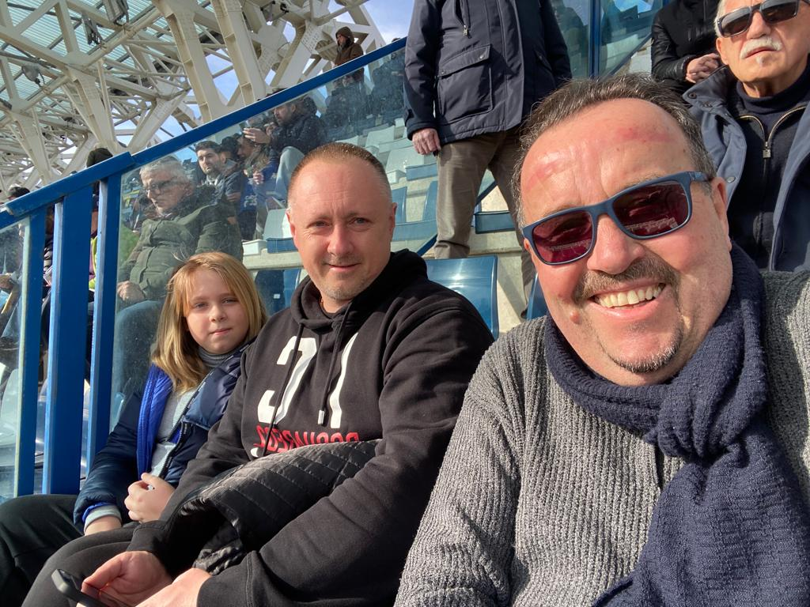

Для меня это одно из важных воспоменаний потому-что ты первый раз за время войны приехал к нам и мы пошли на матч Эмполи. Я до сих пор помню когда Стефано приехал к нам и сказал мне выйти из дома потому-что он хотел меня познакомить со "своим другом а там был ты".
Go home